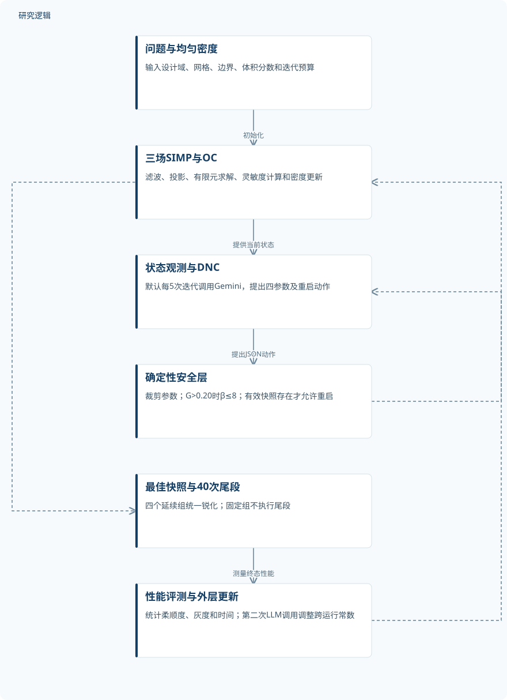
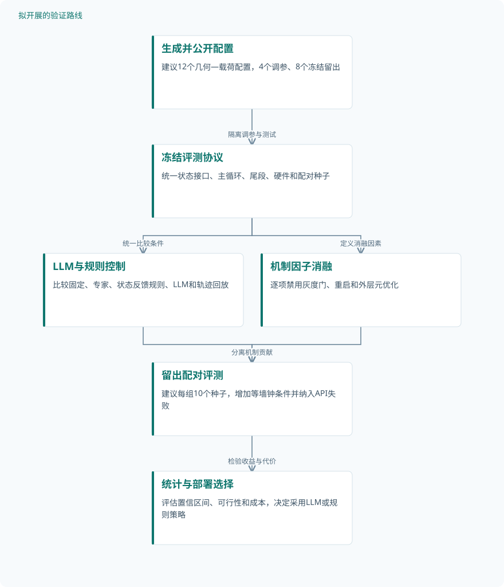

全文精读
大语言模型作为优化控制器：SIMP拓扑优化的自适应延续
Large Language Models as Optimization Controllers: Adaptive Continuation for SIMP Topology Optimization
解读更新 2026-10-11 22:11 · 依据论文全文整理
拓扑优化不仅要决定材料放在哪里，还要决定何时让灰色密度变成黑白结构。本文把大语言模型接入SIMP求解循环，根据当前状态直接调整延续参数，在五个主要二维、三维基准上获得最低平均柔顺度。阅读价值不只是性能数字，更在于理解状态反馈、确定性安全层与末端锐化如何共同作用，以及现有消融距离证明“必须使用LLM”还有多远。
文章目录
锐化时机：黑白结构不等于优质结构
固定延续日程按迭代编号推进，不知道当前拓扑是否已经充分形成。过早提高Heaviside投影锐度β，可能把较差布局锁定在局部极小值；过晚锐化，则持续消耗预算于灰度材料。本文因此关注单载荷柔顺度最小化中的闭环参数控制，而不是直接预测最终拓扑。
这一问题已有非LLM解决思路。实际检索的《Automatic projection parameter increase for three-field density-based topology optimization》摘要介绍了依据目标变化自动提高β，并配合灰度停止准则和自适应移动限幅的方法。本文值得比较的增量，是同时协调多个参数与重启，而不能把“状态驱动锐化”本身视为独有贡献。
LLM提出动作，数值求解器与安全层负责执行
三场SIMP先将原始密度ρ滤波为ρ̄，再以阈值η=0.5投影为物理密度ρ̃。刚度采用E(ρ̃_e)=E_min+ρ̃_e^p(E_0−E_min)，其中E_min=10^−9E_0；求解KU=F后最小化柔顺度C=FᵀU。设计更新始终采用OC，LLM既不替代有限元，也不输出密度场。
内层默认每5次迭代调用gemini-3.1-flash-lite-preview，temperature=0，无拓扑优化数据微调。模型读取柔顺度、灰度、停滞、棋盘格和预算等状态，以JSON直接返回p、β、r_min、δ及restart；解释文本只供审计。确定性安全层裁剪动作，并在G>0.20时强制β≤8，模型无法覆盖。
公式(7)定义G=(4/N_e)Σρ̃_e(1−ρ̃_e)，是连续灰度指标，并非中间密度单元比例。外层在三个二维几何上每个问题执行5次元优化，调整门限、调用频率和阶段常数，不更新模型权重。四个延续控制器均从最佳有效快照执行40次统一锐化尾段，固定基线没有尾段。
原研究：状态条件化延续与统一锐化尾段


LLM调整数值参数而非预测拓扑；外层跨运行调参，固定无延续基线不执行尾段。
下载 SVG图示关系说明
实线表示相邻阶段的信息流，虚线表示跨阶段联系或反馈。
问题与均匀密度 → 三场SIMP与OC：初始化；三场SIMP与OC → 状态观测与DNC：提供当前状态；状态观测与DNC → 确定性安全层：提出JSON动作；确定性安全层 → 三场SIMP与OC：应用受限动作；三场SIMP与OC → 最佳快照与40次尾段：主循环完成；最佳快照与40次尾段 → 性能评测与外层更新：测量终态性能；性能评测与外层更新 → 状态观测与DNC：更新下一运行规则
五种控制器、五个主基准与两类关键消融
验证全部来自数值仿真，没有实物制造或力学试验。主要二维悬臂梁、MBB梁、L形支架采用120×60网格，三维悬臂梁和MBB梁采用40×20×10网格，体积分数均为0.40；主循环300次，延续组另加40次尾段。每个问题、每种控制器报告5个随机种子运行，网格单元和API调用均不是独立样本。
比较组包括固定参数、预设三场延续、专家启发式、Schedule-only及LLM。Schedule-only保留四阶段结构，但不读取实际状态；它在二维悬臂梁和MBB梁上分别比固定基线差0.43%和1.09%。另有60×30、100次主循环的Tail-only消融，其从均匀密度执行尾段，柔顺度劣化114.6%–140.5%，说明仅靠锐化不能替代探索。
| 验证任务 | 样本与规模 | 主要结果 |
|---|---|---|
| 二维主基准五控制器比较及Schedule-only消融 | 每个问题、每个控制器n=5个独立随机种子运行；三种几何不等于15个独立结构。未报告实物试件或增强数据数量。 | LLM的C依次为76.407±0.021、94.646±0.050、43.028±0.000；相对Fixed为−5.65%、−7.46%、−7.12%。时间依次445.2、562.4、150.1 s。 |
| 三维悬臂梁与MBB梁五控制器比较 | 每个问题、每种控制器n=5个种子运行；不是五种独立几何。种子具体值、实物试件及增强数量未报告。 | LLM的C为3.981±0.000、5.430±0.001，相对Fixed为−18.09%、−15.55%；专家为3.999±0.001、5.442±0.001。LLM耗时1198、1685 s。 |
| 低分辨率、短预算下的Tail-only消融 | 各问题、各控制器n=5个种子运行；未报告实体试件和增强数量。迭代次数不是样本数。 | Tail-only的C为211.777、246.560、105.645，相对Fixed增加140.5%、124.7%、114.6%，G均为0.000；LLM只在悬臂梁最优。 |
展开数据来源、分组、对照与验证边界
二维主基准五控制器比较及Schedule-only消融
数据来源。悬臂梁、MBB梁、L形支架数值基准；120×60网格，V_f=0.40、ν=0.3、E_min/E_0=10^−9。
分组与工况。五组分别为Fixed、三场延续、专家启发式、Schedule-only、LLM；主循环300次，除Fixed外追加40次统一尾段。
数据划分。无需训练或微调；三个二维几何均参与外层调参。未报告训练、验证、测试划分或独立留出几何。
对照与消融。Fixed保持p=3、β=1、r_min=1.5、δ=0.2；另比较预设延续、专家规则及无状态反馈的四阶段调度。
评价指标。柔顺度C=FᵀU及均值±标准差、灰度G、相对Fixed均值变化、墙钟时间和最佳快照迭代数；C单位未报告。
验证边界。Fixed无尾段，处理预算不同；未报告显著性检验。正文最小非零标准差表述与表值不符，G=0.000也须结合图中精度解释。
三维悬臂梁与MBB梁五控制器比较
数据来源。两个分别评测的三维数值基准，均为40×20×10网格、V_f=0.40；求解采用AMG预条件共轭梯度法。
分组与工况。Fixed、三场延续、专家启发式、Schedule-only、LLM；N=300主循环，四个延续组采用40次统一尾段。
数据划分。由二维迁移至三维时系统提示不变；未报告独立测试划分，也未开展跨LLM模型的定量验证。
对照与消融。固定参数、预设延续、专家启发式及仅日程控制；代表性投影另含Tail-only，但表7没有该组三维统计结果。
评价指标。柔顺度均值±标准差、平均灰度、相对Fixed变化、时间（s）和最佳有效快照迭代数；柔顺度单位未报告。
验证边界。LLM均值最低但并非最快，MBB耗时最长；未报告显著性检验和完整载荷细节。0.000标准差只代表表列精度。
低分辨率、短预算下的Tail-only消融
数据来源。二维悬臂梁、MBB梁、L形支架；60×30网格，V_f=0.40，主循环N=100，与主要二维配置不同。
分组与工况。六组为Fixed、Tail-only、三场延续、专家启发式、Schedule-only、LLM；Tail-only末端从均匀密度开始锐化40次。
数据划分。无需训练；未报告该消融的独立留出划分。不得把同一几何的种子重复视为跨几何泛化验证。
对照与消融。Tail-only主循环p=1、β=1，不满足有效快照要求；与Fixed及四种完整延续控制器比较。
评价指标。最终柔顺度均值±标准差、平均灰度及相对Fixed变化；该表未报告时间，柔顺度单位未报告。
验证边界。该结果证明此配置下仅尾段不足，不排除其他尾段预算有效。分辨率与预算同时改变，无法分离两者影响。
收益成立，但闭环机制与LLM必要性仍需解耦
主要二维结果相对固定基线降低柔顺度5.65%、7.46%、7.12%，三维对应降低18.09%、15.55%。但二维相对专家启发式的优势仅为0.09%、1.92%、0.95%，且未报告显著性检验；低预算消融中，LLM也并非三个问题都最优。较低柔顺度不意味着普遍更快：二维悬臂梁、MBB梁及两个三维问题均有时间开销。
当前证据支持固定阶段结构不足以解释主实验收益，却不能分离LLM、灰度门、快照重启和外层调参的贡献。三个二维几何都参与元优化，未报告独立测试划分；固定组缺少尾段，也使对它的收益不能全部归因于在线决策。图8门限跨越时间存在图文矛盾，表6缺少重启执行列，MBB密度图还标出G=0.0004，因此应保留精度与机制证据的边界。
从这篇论文走向下一项研究
以下为结合研究方向提出的候选方案，实验设计与预期目标有待验证。
用等预算因子实验检验LLM是否不可替代
问题与短板。现有消融未分离在线LLM、硬灰度门、重启和外层调参，固定基线又没有尾段。建议首先建立可配对的等预算协议，避免将延续收益误认为语言模型的独立贡献。
改进机制。构建透明的状态反馈规则控制器，依据目标变化、G和停滞调整β与δ，再协调p和滤波半径。检索到的自动投影参数研究可作为机制参考，但目前只有摘要，具体实现需取得全文后确认。
候选创新。候选创新是把LLM决策与同状态、同约束的确定性策略放在统一接口中，分解动作提议和安全层执行的贡献。已有自动锐化机制与这一评测组合须明确区分，不预设LLM必然占优。
数据与实验设计。建议设计12个几何—载荷配置，4个用于规则调参、8个冻结留出，每组10个配对种子。自行生成并公开网格、载荷和边界条件，不依赖尚未公开的论文仓库；独立配置与种子重复分别统计。
对照与消融。设置固定、专家规则、状态反馈规则、LLM及动作轨迹回放组，逐项禁用门控、重启和元优化。统一主循环与尾段，再增加等墙钟预算评测，记录失败回退，不将服务失败排除于主要统计。
成功判据。建议预注册配对柔顺度差及95%置信区间，同时要求体积可行、达到明确灰度容差。只有LLM在留出配置和等时间条件下仍有可靠优势，才支持其额外复杂度；否则优先规则控制器。
风险与替代方案。确定性规则可能对调参几何过拟合，API版本也可能漂移。应冻结提示、记录模型版本并保存逐次状态与应用动作；若优势只见于长预算，转向按预算选择控制器，而不追求统一LLM方案。
把参数安全护栏扩展为可验证的求解可信度护栏
问题与短板。本文护栏主要约束参数范围和灰度，尚不能保证三维线性求解准确或重启理由可信。建议先验证数值状态可信度，再讨论多载荷扩展，不能用低柔顺度替代平衡残差和约束可行性。
改进机制。在每次参数变化和快照接纳前重算真实残差‖F−KU‖/‖F‖，并核对体积与灰度。实际检索的密度下限研究摘要提示停止残差可能失真，但其FGMRES结果不能直接套用本文AMG预条件CG。
候选创新。候选创新是将残差验收、动作冲突标记和受限重启统一为独立监督层，LLM只提出动作。真实残差守卫属于已有技术；与延续决策审计的耦合及其成本收益才是需要实验检验的新组合。
数据与实验设计。建议设计8个三维配置，各采集20个不同演化阶段的冻结状态，另作每配置10个种子闭环运行。数据需由可公开的自建有限元流程生成，分别保留状态测试与完整轨迹，不混计为独立几何。
对照与消融。比较原安全层、增加残差守卫、增加阈值显式观测、限制晚期重启四组，使用相同求解容差。再与确定性可信度控制器比较，消融残差检查和理由冲突标记，并注入可记录的API失败。
成功判据。建议以全部接纳状态满足预设残差容差为首要判据，同时报告错误接纳率、无效重启数、柔顺度和墙钟开销。阈值如10^−6仅为建议起点，需经网格与求解器敏感性分析确定。
风险与替代方案。额外残差检查可能抵消优化收益，故先测试冻结状态再进入闭环。若检查昂贵，可按参数突变和停滞触发，但最终状态仍须强制验收；若多载荷成本过高，先限制在单载荷验证可信度。
拟议路线一：等预算分解闭环控制收益


以下为建议实验，不代表已验证结果；重点区分LLM提议、安全层和元优化的作用。
下载 SVG图示关系说明
实线表示相邻阶段的信息流，虚线表示跨阶段联系或反馈。
生成并公开配置 → 冻结评测协议：隔离调参与测试；冻结评测协议 → LLM与规则控制：统一比较条件；冻结评测协议 → 机制因子消融：定义消融因素；LLM与规则控制 → 留出配对评测：比较控制策略；机制因子消融 → 留出配对评测：分离机制贡献；留出配对评测 → 统计与部署选择：检验收益与代价